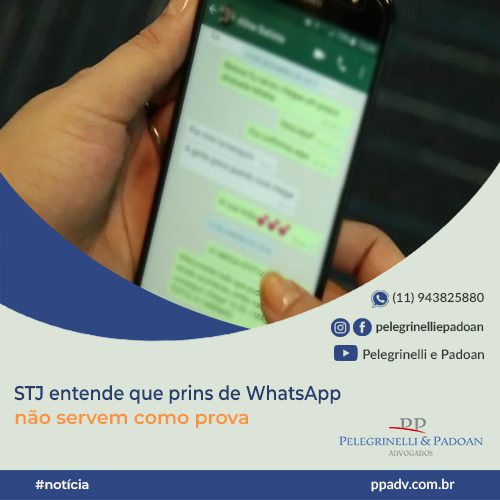

Quinta Turma não aceita como provas prints de celular extraídos sem metodologia adequadav

A Quinta Turma do Superior Tribunal de Justiça (STJ), por unanimidade, decidiu que são inadmissíveis no processo penal as provas obtidas de celular quando não forem adotados procedimentos para assegurar a idoneidade e a integridade dos dados extraídos. Segundo o colegiado, as provas digitais podem ser facilmente alteradas, inclusive de maneira imperceptível; portanto, demandam mais atenção e cuidado na custódia e no tratamento, sob pena de terem seu grau de confiabilidade diminuído ou até mesmo anulado.
Com base nesse entendimento, a turma considerou que os prints de WhatsApp obtidos pela polícia em um celular não poderiam ser usados como prova na investigação sobre uma organização criminosa com a qual o dono do aparelho estaria envolvido.
Após o juízo de primeiro grau concluir pela validade das provas telemáticas, o Tribunal de Justiça do Rio Grande do Norte (TJRN) confirmou a sentença que condenou o réu a quatro anos e um mês de prisão, sob o fundamento de que não foram apontados indícios de manipulação ou de outro problema que invalidasse os dados tirados do celular.
Material digital deve ser tratado mediante critérios bem definidos
Ao STJ, a defesa alegou que a extração de dados do aparelho foi feita pelo Departamento de Investigações sobre Narcóticos (Denarc), quando deveria ter sido realizada pelo Grupo de Atuação Especial de Repressão ao Crime Organizado (Gaeco), cujo procedimento seria o único capaz de impedir manipulação e assegurar a legitimidade da prova.
O ministro Joel Ilan Paciornik, relator do habeas corpus, ressaltou que é indispensável que todas as fases do processo de obtenção das provas digitais sejam documentadas, cabendo à polícia, além da adequação de metodologias tecnológicas que garantam a integridade dos elementos extraídos, o devido registro das etapas da cadeia de custódia, de modo que sejam asseguradas a autenticidade e a integralidade dos dados.
Segundo o relator, o material digital de interesse da persecução penal deve ser tratado mediante critérios bem definidos, com indicação de quem foi responsável pelas fases de reconhecimento, coleta, acondicionamento, transporte e processamento, tudo formalizado em laudo produzido por perito, com esclarecimento sobre metodologia empregada e ferramentas eventualmente utilizadas.
Máquina de extração não conseguiu ler o celular
Contudo, o magistrado destacou que, no caso dos autos, a análise dos dados se deu em consulta direta ao celular, sem o uso de máquinas extratoras. O aparelho telefônico até foi encaminhado para extração via kit Cellebrite – aparelho de extração e análise de dados digitais –, porém o pacote da máquina disponível na Polícia Civil do Rio Grande do Norte não tinha atualização ou capacidade para leitura do dispositivo.
Diante disso, o ministro apontou não ser possível conferir a idoneidade das provas extraídas pelo acesso direto ao celular apreendido, pois não havia registro de que os elementos inicialmente coletados fossem idênticos aos que corroboraram a condenação.
Na avaliação de Paciornik, a quebra da cadeia de custódia causou prejuízos evidentes e tornou a prova digital imprestável para o processo. Acompanhando o voto do relator, a Quinta Turma concedeu o habeas corpus e determinou que o juízo de primeira instância avalie se há outras provas capazes de sustentar a condenação.